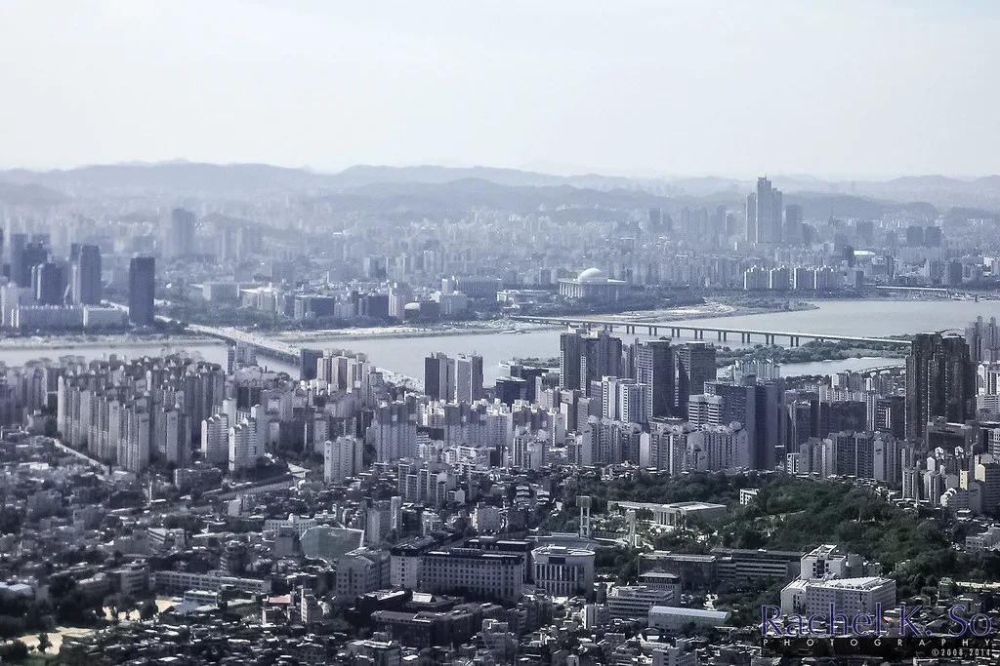
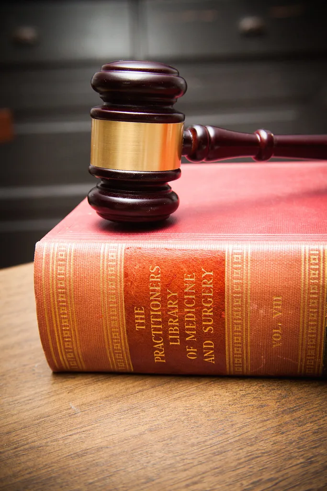

더불어민주당 윤리심판원이 27일 최민희 최고위원에 대해 중징계를 의결했다. 윤리심판원은 이날 7시간 가까이 회의를 이어간 끝에 최 최고위원의 일부 발언이 당의 품위를 훼손했다고 판단했다. 구체적인 징계 수위는 공식적으로 발표되지 않았지만, 여러 언론은 당원자격정지 2년이 의결된 것으로 전해졌다고 보도했다. 일부 매체는 최소 당직자격정지 이상의 처분이라고 표현해, 보도마다 전하는 수위에는 다소 차이가 있다.
이창환 윤리심판원장은 회의를 마친 뒤 규정상 의결된 징계 양정을 밝힐 수 없다는 입장을 내놨다. 당 윤리 규정이 징계 결과의 세부 내용을 바로 공개하지 않도록 하고 있다는 설명이다. 이번 결정은 이달 중순 당 감찰 결과가 윤리심판원으로 넘어가면서 본격적인 심리 절차가 시작된 지 약 2주 만에 나온 것이다. 그동안 당 안팎에서는 중징계와 경징계를 두고 의견이 엇갈렸고, 어느 쪽이든 지도부에 부담이 될 수 있다는 분석이 이어졌다.

징계 사유로는 크게 두 가지 발언이 거론된다. 하나는 지난달 지역구 비공개 간담회에서 나온 것으로, 이재명 대통령이 당 대표 시절 윤석열 전 대통령 탄핵에 반대했다는 취지의 발언이다. 다른 하나는 국회 출입 취재진을 '하이에나 떼'에 빗댄 단체대화방 발언이다. 앞의 발언은 사실관계 논란과 함께 대통령을 향한 부적절한 언급이라는 비판을 받았고, 뒤의 발언은 언론을 비하했다는 지적으로 이어졌다. 두 발언 모두 알려진 직후부터 당 안팎에서 적잖은 논란을 불렀고, 최 최고위원 측의 해명에도 비판 여론은 쉽게 가라앉지 않았다.
징계가 그대로 확정되면 파장은 작지 않다. 당원자격이 정지되는 동안에는 최고위원직을 유지하기 어렵고, 정지 기간을 고려하면 다음 총선에 민주당 후보로 나서는 것도 사실상 어려워질 것으로 보인다. 현직 최고위원이 이 정도 수위의 징계를 받는 것은 이례적이어서, 지도부 구성에도 일정 부분 변화가 불가피하다는 관측이 나온다.
최 최고위원은 결정에 즉각 반발했다. 그는 페이스북을 통해 이번 결정을 받아들이기 어렵다며 재심을 신청하겠다고 밝혔다. 당규에 따르면 징계 대상자는 결과를 통보받은 날부터 7일 안에 재심을 청구할 수 있고, 윤리심판원은 접수일로부터 60일 안에 다시 심사해야 한다. 재심 결과에 따라 최종 징계 수위가 달라질 여지도 남아 있다. 재심이 진행되는 동안 최 최고위원의 당내 활동 범위가 어떻게 정리될지도 관심사다.

당내 반응도 엇갈리고 있다. 정청래 전 대표는 납득할 수 없다며 반발했고, 이른바 친청계에서는 김민석 대표의 발언과 관련해 접수된 징계 청원도 같은 기준으로 함께 심사해야 한다고 요구했다. 윤리심판원은 해당 청원을 전체회의에 회부하기로 했다. 반면 다른 쪽에서는 당 기강을 바로 세우기 위해 불가피한 결정이었다는 평가도 나온다.
이번 사안은 개인 징계를 넘어 당내 계파 간 긴장으로 번질 가능성이 거론된다. 재심 청구가 실제로 이뤄질지, 윤리심판원이 김 대표 관련 청원을 어떻게 처리할지에 따라 당 지도부의 부담도 달라질 전망이다. 당분간 민주당 안에서는 징계의 형평성과 절차를 둘러싼 논쟁이 이어질 것으로 보인다. 지도부가 내부 결속과 기강 확립 사이에서 어떤 해법을 내놓을지도 주목된다.